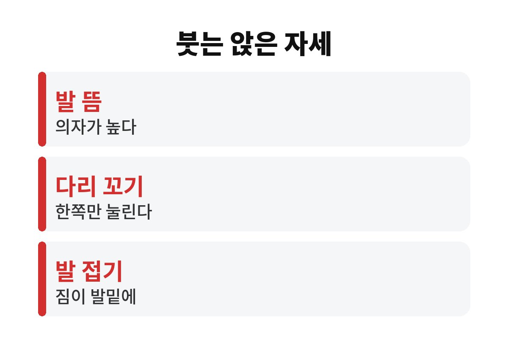
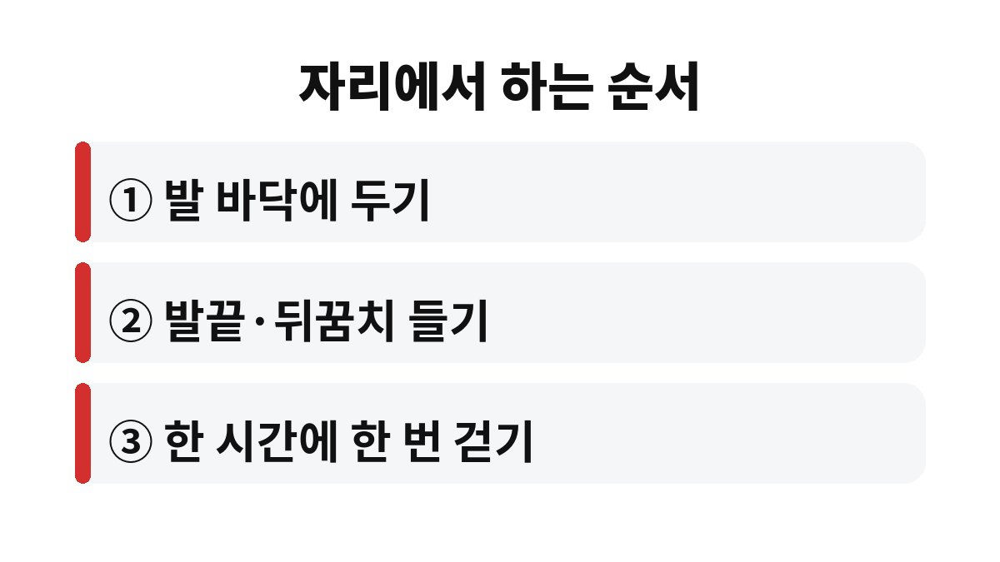

다리 붓기는 오래 앉아 있는 날 오후에 심해지는 경우가 많고, 대부분은 앉은 자세에서 종아리를 거의 쓰지 않은 탓에 생긴다.
양말 자국이 평소보다 깊게 남거나 신발이 낮 동안 꽉 끼기 시작했다면 자리에서 바꿀 수 있는 것부터 살펴볼 만하다.
아래 내용은 세계보건기구(WHO)의 앉아 있는 시간 관련 권고를 바탕으로 한 일반 정보이며, 질환의 진단이나 치료를 대신하지 않는다.
걷거나 서서 움직일 때는 종아리 근육이 수축하면서 다리의 혈액이 심장 쪽으로 올라가는 것을 돕는다.
앉아서 발목을 거의 움직이지 않으면 이 도움이 줄어 수분이 다리 아래쪽에 머물기 쉽다.
그래서 아침에 맞던 신발이 퇴근 무렵 답답해지는 일이 생긴다.
의자가 높아 발이 바닥에 닿지 않은 채 매달려 있으면 허벅지 뒤쪽이 눌려 다리가 더 무거워진다.
다리를 꼬고 오래 앉는 습관도 한쪽 다리만 눌러 놓는 모양이 된다.
책상 밑에 짐이 있어 발을 접고 앉는 경우도 마찬가지다.
출근해서 오전 내내 앉아 있다가 점심에 잠깐 걷고 다시 오후 내내 앉는 패턴이 흔하다.
점심 걷기가 있어도 그 뒤 서너 시간을 움직이지 않으면 다리는 다시 같은 상태로 돌아간다.
붓기가 퇴근 직전에 가장 두드러지는 까닭이 여기에 있다.
같은 사무직이라도 다리 붓기의 이유는 조금씩 다르다.
아래 표에서 오늘 내 자리와 가까운 줄을 하나만 골라 먼저 손봐도 된다.
| 앉는 모양 | 나타나기 쉬운 느낌 | 먼저 바꿀 것 |
|---|---|---|
| 발이 바닥에 안 닿음 | 허벅지 뒤쪽이 저리고 발등이 붓는다 | 의자를 낮추거나 발받침을 둔다 |
| 다리를 꼬고 앉음 | 한쪽 다리만 더 무겁다 | 양발을 바닥에 두고 30분 안에 자세를 바꾼다 |
| 회의가 길어 못 일어남 | 오후에 양말 자국이 깊다 | 앉은 채 발목 돌리기를 이어 간다 |
| 짠 음식을 먹은 날 | 저녁에 얼굴과 다리가 함께 붓는다 | 물을 천천히 나누어 마시고 국물을 줄인다 |
표에 짠 음식이 들어간 이유는 나트륨이 많은 날 몸에 수분이 더 남아 붓기가 눈에 띄기 때문이다.
다만 이것만으로 붓기를 설명할 수는 없어서 앉은 자세와 함께 본다.
예를 들어 점심에 국물이 많은 메뉴를 먹고 오후 회의에 두 시간 앉아 있었다면 두 가지가 겹친 날로 보면 된다.

WHO는 2020년 신체활동·좌식행동 지침에서 성인이 앉아 있는 시간을 줄이고 그 시간을 어떤 강도든 몸을 움직이는 활동으로 바꾸라고 권고한다.
격한 운동이 아니어도 된다는 뜻이어서 다리 붓기가 신경 쓰이는 날 자리에서 하는 작은 동작도 의미가 있다.

이 동작은 하나하나가 눈에 띄지 않아 회의 중에도 할 수 있다.
신발이 불편하면 책상 밑에서 벗고 해도 된다.
처음에는 열 번이 길게 느껴져도 며칠 지나면 몸이 기억해 타이머 없이도 손이 간다.
모든 사람에게 똑같이 맞는 방법은 아니다.
무릎이나 발목이 아파 동작이 힘들다면 무리하지 말고 가능한 범위에서만 한다.
밤에 쉬고 아침이 되면 가라앉는 붓기는 생활 습관에서 오는 경우가 많다.
한쪽 다리만 갑자기 붓고 아프거나 붉게 달아오른다면 앉는 자세를 고칠 일이 아니라 진료를 받을 일이다.
숨이 차거나 가슴이 답답한 증상이 함께 있다면 바로 응급실이나 병원에 가야 한다.
며칠 동안 자세를 바꿔도 붓기가 그대로이거나 점점 심해지는 경우에도 전문의 상담이 필요하다.
심장·신장·혈관 질환이 있거나 약을 복용 중이라면 붓기를 스스로 판단하지 말고 의료진에게 먼저 묻는다.
오늘 퇴근 전에 양말 자국이 얼마나 남는지 한 번 확인해 본다.
내일은 한 시간마다 발끝 들기 열 번만 더해 보고 자국의 차이를 비교하면 된다.
참고 자료: 세계보건기구(WHO) 「WHO guidelines on physical activity and sedentary behaviour」(2026년 11월 확인)
※ 2026년 기준 공식 기준을 바탕으로 정리한 일반 건강 정보이며, 증상이 계속되거나 지병이 있다면 전문의와 상담하길 바란다.